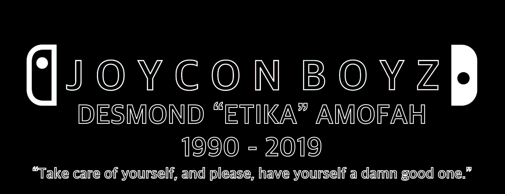

About Me
Hey there! I'm John. I'm currently a Sophmore at Stuyvesant High School who's currently trying to run a small business, prepare for college, and NOT fail my finals.
As you could probably guess, I
love Computer Science, Astronomy,
anime, fighting games and FPS's, basketball, and all things streetwear. I discovered Comp Sci thanks
to
my dad, who works in IT over at Baruch College. As I got older, I then developed a basic understanding of web development by
deobfuscating sneaker bots and looking at their code.
Anime
I grew up watching anime, with some of the first ones I remember being Dragon Ball Z, Sword Art
Online,
and Death Note. Best ones I've watched so far are Bleach, Naruto, Jujutsu Kaisen, Soul Eater, and
Fire
Force.
and Anime also led me to discover some of my best friends and favorite content creators.
I specifically remember loving Bakugan, Beyblade, and Pokemon to an almost unhealthy level, and all
of
my friends in kindergarten would always want to come to my house to play with my beyblade
collection.
Fighting Games, FPSs, and More
Man. Where do I get started on fighting games. First one I ever played was Dragon Ball FighterZ, and
from there I
springboarded into SkullGirls, Guilty Gear, BlazBlue, Under-Night, and GBFVS. Since I started, I've
went to like 2 or 3 local tournaments
in DBFZ and a lot of online tournaments for BlazBlue.
(Click here to see a GGST Combo Database I coded! It has clips of me and my friends doing combos in a game
called Guilty Gear Strive.)
Now as for FPS games, Destiny and Titanfall all take the crown as undisputed GOATs. Destiny is my #1
favorite franchise,
with the lore, powers, weapons, and bosses all being so masterfully crafted it makes my eyes teary
to this day.
Titanfall, on the other hand, was a legitimate Masterpiece of a game that was unfortunately
forgotten to time. It deserved better. Probably my #2 Favorite game of all time.
#SaveTitanFall
I also recently started playing Valorant, and I can honestly say that I love the game. It's
mechanically complex, and the lore isn't too deep, but the gunplay, artstyle, and unique
character designs always keep me intrigued and playing the game.
Lastly, I just got into Soulsborne games like Dark Souls and Sekiro the other day. I have no idea why I never played one until now! They're great.
(P.S: Pokemon generations 3 and 6 are the best ones out there. this is a fact.)

 Fav Song:
Fav Song:  Combo Repo!
Combo Repo!